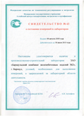

- Лаборатория

Лаборатория ЗАО «БКЖБИ-2»
Лаборатория ЗАО "БКЖБИ-2" осуществляет полный входной контроль материалов применяемых для производства, а так же ведет операционный и приемо-сдаточный контроль производимых бетонных и растворных смесей непосредственно на БСУ, в цехах и на объектах. ФГУ "Алтайский ЦСМ" провело проверку о состоянии измерений в лаборатории, и выдало свидетельство, удостоверяющее наличие в ПСЛ ЗАО "БКЖБИ-2" условий, необходимых для выполнения измерений, в закрепленной за лабораторией области деятельности (испытания инертных мелких и крупных заполнителей, цемента, бетонных, растворных смесей, бетона и раствора). Все испытания проводятся квалифицированными специалистами согласно методикам и требованиям соответствующей нормативной документации.
| № п/п |
Наименование работ |
Единицы измерения |
Необходимый объем пробы |
Затраты труда, чел/дни |
Стоимость работ, руб (без НДС) |
|---|---|---|---|---|---|
| 1 | Испытание цемента: - активность ( в бетоне) | проба проба | 3 кг 2 кг | 2 2 | 1 500 700 |
| 2 | Испытания щебня | проба | 20 кг | 3 | 2 500 |
| 3 | Испытания песка | проба | 5 кг | 2 | 2 000 |
| 4 | Испытание арматурных сталей, св. соединений и закладных деталей | проба | 3 шт. | 0,5 | 600 |
| 5 | Испытание кирпича - прочность при сжатии, изгибе | проба | 15 шт. | 2,5 | 1 000 |
| 6 | Неразрушающие методы контроля прочности бетона: Монолитные сооружения Не смонтированные конструкции Смонтированные конструкции: - в строящихся зданиях - в эксплуатируемых зданиях | 1 м.куб. шт. шт. шт. | - - - - | 2,5 1 2 3 | 200 400 450 400 |
| 6 | Испытание бетона, раствора, кирпича на водопоглощение | проба | 3 обр. | 1 | 500 |